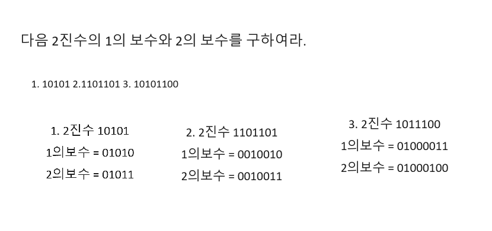
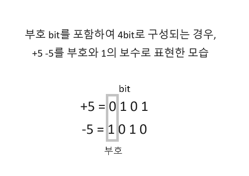
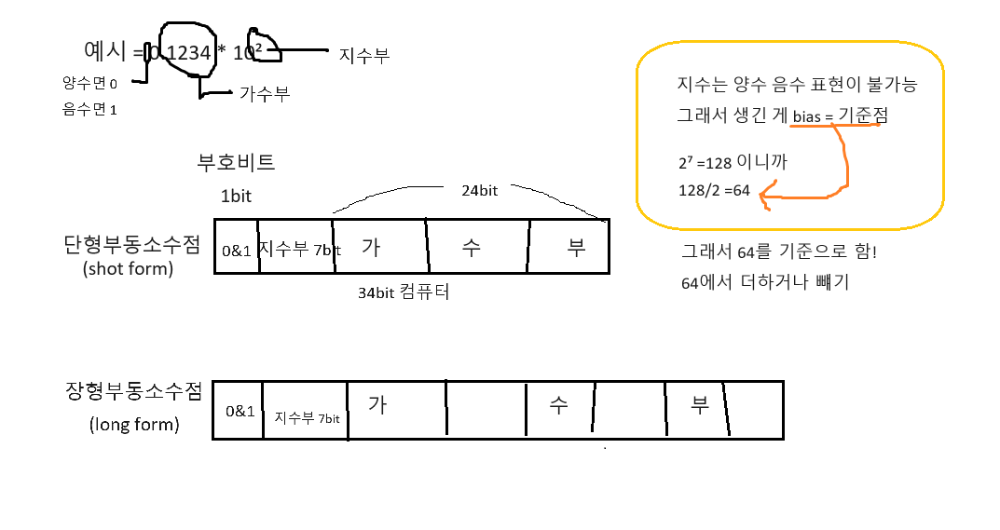
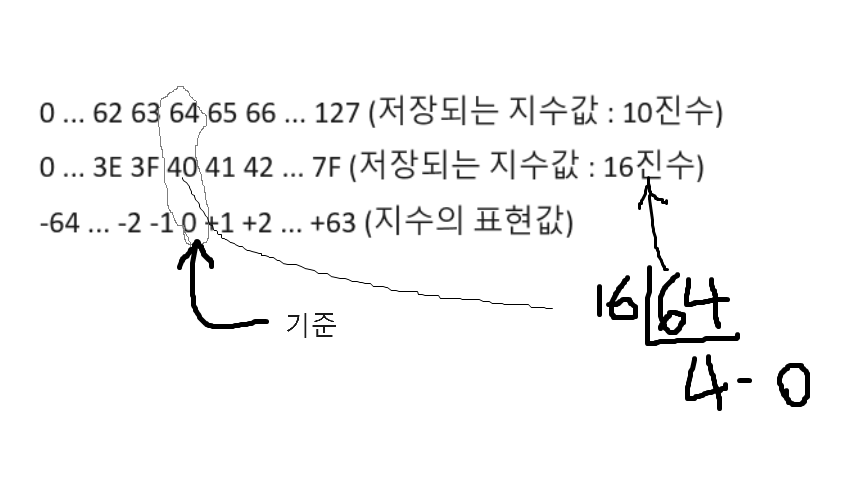

자료의 표현 단위
bit
byte (bit 8개)
word (1byte 이상)
MSB: Most Significant Bit(왼쪽: 최상위비트)
LSB: Least Significant Bit(오른쪽: 최하위비트)
기억용량의 표현
| 종류 | 의미 | 표현 | 단위 |
|---|
| KiloByte(KB) | 10³ | 2¹⁰byte | 1024B |
| MegaByte(MB) | 10⁶ | 2²⁰byte | 1024KB |
| GigaByte(GB) | 10⁹ | 2³⁰byte | 1024MB |
| TelaByte(TB) | 10¹² | 2⁴⁰byte | 1024GB |
10³+10³=10⁶
10³+10³+10³=10⁹ =10³M
진법표
| 10진법 | 2진법 | 8진법 | 16진수 |
|---|
| 0 | 0000 | 0 | 0 |
| 1 | 0001 | 1 | 1 |
| 2 | 0010 | 2 | 2 |
| 3 | 0011 | 3 | 3 |
| 4 | 0100 | 4 | 4 |
| 5 | 0101 | 5 | 5 |
| 6 | 0110 | 6 | 6 |
| 7 | 0111 | 7 | 7 |
| 8 | 1000 | 10 | 8 |
| 9 | 1001 | 11 | 9 |
| 10 | 1010 | 12 | A |
| 11 | 1011 | 13 | B |
| 12 | 1100 | 14 | C |
| 13 | 1101 | 15 | D |
| 14 | 1110 | 16 | E |
| 15 | 1111 | 17 | F |
문제: (21.275)10 = (10101.0100)
나의 2진수 간단 계산법
💡💡💡💡💡💡💡💡
1-2-4-8-16-32-64-128
소숫점 계산법
0.275 0.550 0.100 0.200
* 2 * 2 * 2 * 2
ㅡㅡㅡㅡ ㅡㅡㅡㅡ ㅡㅡㅡㅡ ㅡㅡㅡㅡ
0.550 1.100 0.200 0.400
110111 변환
2진수 -> 16진수
(추가:00)110111 -> 0011(3)/0111(7)-> (37)16
2진수 -> 8진수
110111 -> 110(6)/111(7) -> (67)8
16진수는 4개씩 나눔
예시: (추가:0)100(4)/1001(9).0100(4)
8진수는 3개씩 나눔
예시: 001(1)/001(1)/001(1).001(1)/0(x)
보수란?
2진 보수, 1의 보수, 2의 보수
2진 보수는 2의 보수와 기수 1인 1의 보수를 포함한다.
1의 보수는 1은 0으로 0은 1로 바꾸면 되고
2의 보수는 1의 보수 값에서
맨 최하위(LSB)에 1을 더 더하면 된다.
2진수(문제1) = 10101
1의 보수 = 01010
2의 보수 = 01011
보수 간단 예시

2의 보수 예시문제: 1010100 + 1000100
(1000100 -> 0111011(+1하면) -> 0111100)
1010100
+ 0111100
ㅡㅡㅡㅡㅡㅡ
(새로운 자리올림 제거)1/0010000
2의 보수 예시문제: 1000100 - 1010100
(1000100 + (-1010100) -> 1000100 + 1010100)
1000100
+ 1010100
ㅡㅡㅡㅡㅡㅡ
1110000 -> 2의 보수 하면? -> -0010000
보수에 의한 감산
컴퓨터는 마이너스 기호를 인식 못함.
대신 값의 보수를 취한 값이다 까진 알아봄.
예시: 10 + (-10)
추가 필요
부호와 1의 보수
부호와 1의 보수 표현법은
부호와 절대치 표현법과 같음
음수값은 부호 bit를 1로 하고
나머지 크기는 1의 보수로 표현

+5 부호는 0 / -5 부호는 1
수의 표현 범위
nbit를 갖는 부호, 1의 보수로 표현 가능한 범위
(-2ⁿ⁻¹ -1 ~ +2ⁿ⁻¹ -1)
n-1의 의미는 n bit - 부호 bit를 말함.
부호와 2의 보수
부호와 2의 보수 표현 방법은
양수값은 부호와 절대치 표현 방법 또는
부호와 1의 보수와 동일하나,
음수 값은 부호 bit를 1로 하고
나머지 크기 부분은 2의 보수로 표현한다.
"4bit 정수"의 표현 범위
| 표현방법 | 부호와절대치 | 부호와1의보수 | 부호와2의보수 |
|---|
| 범위 | -7~7 | -7~7 | -8~7 |
|---|
| 7 | 0111 | 0111 | 0111 |
| 6 | 0110 | 0110 | 0110 |
| 5 | 0101 | 0101 | 0101 |
| 4 | 0100 | 0100 | 0100 |
| 3 | 0011 | 0011 | 0011 |
| 2 | 0010 | 0010 | 0010 |
| 1 | 0001 | 0001 | 0001 |
| 0 | 0000 | 0000 | 0000 |
| -0 | 1000 | 1111 | X |
| -1 | 1001 | 1110 | 1111 |
| -2 | 1010 | 1101 | 1111 |
| -3 | 1011 | 1100 | 1101 |
| -4 | 1100 | 1011 | 1100 |
| -5 | 1101 | 1010 | 1011 |
| -6 | 1110 | 1001 | 1010 |
| -7 | 1111 | 1000 | 1001 |
| -8 | Impossible | Impossible | 1000 |
4bit 정수 기준 부호와 절대치 표현법
부호와1의보수 부호와2의보수 표현범위를 나타냄.
부동소수점의 표현
고정소수점 표현과 다르게 소수점을 포함한 수도표현이 가능하다
(한 마디로 부동이란 (실수고) 소수점이 움직인다)
소수점이 있는 실수 표현 방법
12.34의 수가 있다면
= 123.4 * 10⁻¹
= 1.234 * 10¹
= 0.1234 * 10² (컴퓨터는 이렇게 받아들임)
= 0.01234 * 10³
= 0.1234 * 10² 이렇게 정의하는 걸
정규화한다고 부름.

예시문제: 32비트 실수를 표현하는 컴퓨터에서
밑수가 16(진수)이고 지수표현 bias은 64비트를 쓰는 경우
42.125를 부동소수점 표현 방식으로 표현하세요.
42.125를 16진수로 변환(밑수가 16이니까)
(42.125)₁₀ => (2A.2)₁₆
16진수 2B.2를 정규형으로 변환(정규화)
(2A.2)₁₆ => 0.2A2 * 16² =>
지수표현(bias) 64라니까 16진수로 변환 후
아까 계산한 진짜 지수 값에 bais 값을 더하자
지수표현 64인 거 16진수로 바꿈 (64)₁₀ => (40)₁₆
지수값 (2)₁₆ + (40)₁₆ = (42)₁₆
(지수부분은 16진수가 42므로 2진수로 바꾸면 100 0010됨)
지수부가 7비트라서 양의 정수 0부터 127(1111111₂)까지 표현힐 수 있음
그러나 지수는 양수승과 음수승이 있기 때문에
-64부터 63승까지 표현하도록 했다.
실제 저장되는 지수값은 지수에 64(40₁₆)을 더한 값이다.

예시: 지수가 16²일 경우 지수부에 저장되는 값은
40+2 = 42₁₆(1000010₂)
지수가 16⁻¹일 경우에 지수부에 저장되는 값은
40-1 = 3F₁₆(0111111₂)
가수부 부분은 16진수로 2A2000이니까(2A.2)
2진수로 변환하면 0010 1010 0010 0000 0000 0000
개인적으로 해깔리는 16진수 세기
0 1 2 3 4 5 6 7 8 9 a b c d e f
10 11 12 13 14 15 16 17 18 19 1A
1B 1C 1D 1E 1F 20 21 22 23 24 25
26 27 28 29 2A 2B 2C 2E 2F 30 31
32 33 34 35 36 37 38 39 3A 3B 3C
3D 3E 3F 40 41 42 43 44 45 46 47
48 49 4A 4B 4C 4D 4E 4F 50 51 52
53 54 55 56 57 58 59 5A 5B 5C 5D
5E 5F 60 61 62 63 64 65 66 67 68
69 6A 6B 6C 6D 6E 6F 70 71 72 73
74 75 76 77 78 79 7A 7B 7C 7D 7E
7F(10진수: 127)